3 A/B sequence model
3.0.2 Get A/B meth data
## [1] 132052## [1] "chrom" "start" "end" "d0_3a" "d0S_3a" "d1_3a" "d2_3a"
## [8] "d3_3a" "d4_3a" "d0_3b" "d0S_3b" "d1_3b" "d2_3b" "d3_3b"
## [15] "d4_3b" "d0_tko" "d0S_tko" "d1_tko" "d2_tko" "d3_tko" "d4_tko"
## [22] "d0_wt" "d0S_wt" "d1_wt" "d2_wt" "d3_wt" "d4_wt"m <- cpg_meth %>%
mutate(
mA = psum(d1_3a, d2_3a, d3_3a, d4_3a, na.rm=FALSE),
mB = psum(d1_3b, d2_3b, d3_3b, d4_3b, na.rm=FALSE),
mwt = psum(d1_wt, d2_wt, d3_wt, d4_wt, na.rm=FALSE),
dAB = mA - mB,
dB = mB - mwt,
dA = mA - mwt
) %>%
select(chrom, start, end, mA, mB, mwt, dAB, dB, dA)3.0.2.1 Clean loci with 0 methylation:
locus_means <- rowMeans(cpg_meth %>% select(-(chrom:end)), na.rm=TRUE)
locus_sds <- matrixStats::rowSds(cpg_meth %>% select(-(chrom:end)) %>% as.matrix() , na.rm=TRUE)options(repr.plot.width = 8, repr.plot.height = 4)
thresh <- 0.05
p1 <- tibble(m = locus_means) %>% ggplot(aes(x=m)) + geom_density() + geom_vline(xintercept=thresh, linetype="dashed", color="red")
p2 <- tibble(m = locus_means, sd = locus_sds) %>% ggplot(aes(x=m, y=sd)) + geom_point(size=0.01) + geom_vline(xintercept=thresh, linetype="dashed", color="red")
p1 + p2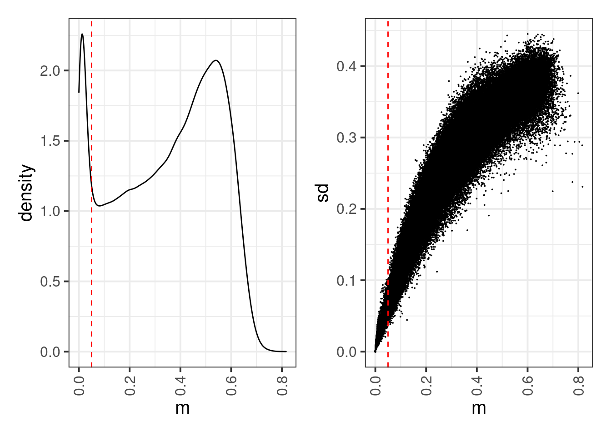
## [1] 15935## [1] 1161173.1 Calculate models
## # A tibble: 6 x 6
## chrom start end nuc pos dnuc
## 1 chr1 4402515 4402516 G 2 GG
## 2 chr1 4402515 4402516 G 3 GG
## 3 chr1 4402515 4402516 G 4 GA
## 4 chr1 4402515 4402516 A 5 AA
## 5 chr1 4402515 4402516 A 6 AG
## 6 chr1 4402515 4402516 G 9 GCseq_df_wide <- seq_df_to_wide(seq_df, flank_bp = 5)
seq_df_wide_nuc <- seq_df_to_wide(seq_df, flank_bp = 5, dinuc=FALSE)3.1.1 Compute models
3.1.1.1 hyperparameters tuning:
## $params
## $params$booster
## [1] "gbtree"
##
## $params$objective
## [1] "reg:squarederror"
##
## $params$subsample
## [1] 1
##
## $params$max_depth
## [1] 4
##
## $params$colsample_bytree
## [1] 0.4
##
## $params$gamma
## [1] 0.1
##
## $params$eta
## [1] 0.05
##
## $params$eval_metric
## [1] "rmse"
##
## $params$min_child_weight
## [1] 2
##
##
## $nrounds
## [1] 1750## dAB (dinuc)model_ab <- gen_seq_model(seq_df_wide, m, dAB) %cache_rds% here("output/ab_dinuc_model_5bp.rds")
model_ab_xgboost <- gen_seq_model_xgboost(seq_df_wide, m, dAB, xgb_params) %cache_rds% here("output/ab_dinuc_model_5bp_xgboost.rds")
message("dAB (nuc)")## dAB (nuc)model_ab_nuc <- gen_seq_model(seq_df_wide_nuc, m, dAB) %cache_rds% here("output/ab_nuc_model_5bp.rds")
model_ab_nuc_xgboost <- gen_seq_model_xgboost(seq_df_wide_nuc, m, dAB, xgb_params) %cache_rds% here("output/ab_nuc_model_5bp_xgboost.rds")
message("dA")## dAmodel_a <- gen_seq_model(seq_df_wide, m, dA) %cache_rds% here("output/a_dinuc_model_5bp.rds")
model_a_xgboost <- gen_seq_model_xgboost(seq_df_wide, m, dA, xgb_params) %cache_rds% here("output/a_dinuc_model_5bp_xgboost.rds")
message("dB")## dB3.2 Plot models vs preditions
3.2.1 Figure 4F
options(repr.plot.width = 20, repr.plot.height=4)
p_ab_glm <- plot_model_scatter(model_ab, x_lab="Dinucleotide combined model (GLM)", y_lab = "Meth (3a-/-) - (3b-/-)", xlim=c(-1.1, 0.6), ylim= c(-1.8, 1.2))
p_ab <- plot_model_scatter(model_ab_xgboost, x_lab="Dinucleotide combined model", y_lab = "Meth (3a-/-) - (3b-/-)", xlim=c(-1.1, 0.6), ylim= c(-1.8, 1.2))
p_ab_nuc <- plot_model_scatter(model_ab_nuc_xgboost, x_lab="Nucleotide combined model", y_lab = "Meth (3a-/-) - (3b-/-)", xlim=c(-1.1, 0.6), ylim= c(-1.8, 1.2))
p_a <- plot_model_scatter(model_a_xgboost, x_lab="Dinucleotide combined model", y_lab = "3a-/- - wt")
p_b <- plot_model_scatter(model_b_xgboost, x_lab="Dinucleotide combined model", y_lab = "3b-/- - wt")
fa_b <- model_a$mat %>% select(chrom:end) %>% mutate(i = 1:n()) %>% inner_join(model_b$mat %>% select(chrom, start, end)) %>% pull(i)## Joining, by = c("chrom", "start", "end")fb_a <- model_b$mat %>% select(chrom:end) %>% mutate(i = 1:n()) %>% inner_join(model_a$mat %>% select(chrom, start, end)) %>% pull(i)## Joining, by = c("chrom", "start", "end")p_models <- tibble(model_a = model_a_xgboost$pred[fa_b], model_b = model_b_xgboost$pred[fb_a]) %>%
mutate(col = densCols(., bandwidth=0.08,colramp=colorRampPalette(c("white","lightblue", "blue", "darkblue", "yellow", "gold","orange","red", "darkred" )))) %>%
ggplot(aes(x=model_a, y=model_b, col=col)) +
geom_point(shape=19, size=0.4) +
scale_color_identity() +
coord_cartesian(xlim = c(-1, 0.4), ylim = c(-0.3, 0.3)) +
xlab("3a-/- model") +
ylab("3b-/- model") +
theme(aspect.ratio=1, panel.grid.major=element_blank(), panel.grid.minor=element_blank()) +
labs(subtitle = glue("R^2 = {cor}, m = {meth_cor}", cor = round(cor(model_a_xgboost$pred[fa_b], model_b_xgboost$pred[fb_a])^2, digits=2), meth_cor = round(cor(model_a_xgboost$mat$dA[fa_b], model_b_xgboost$mat$dB[fb_a])^2, digits=2)))
p <- p_a + p_b + p_models + p_ab_nuc + p_ab + p_ab_glm + plot_layout(nrow=1)
p & theme_bw() & theme(plot.subtitle = ggtext::element_markdown(), aspect.ratio=1, panel.grid.major=element_blank(), panel.grid.minor=element_blank())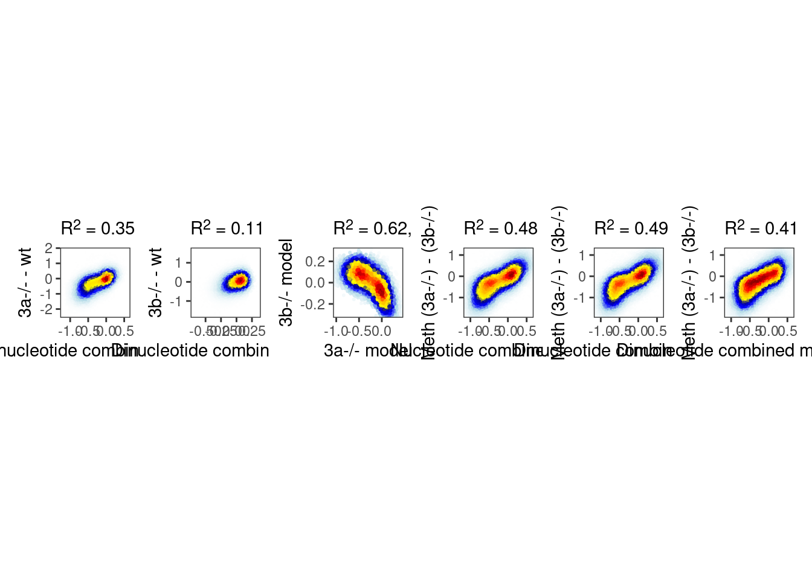
3.2.3 Figure 4D
## Loading required package: Matrix##
## Attaching package: 'Matrix'## The following objects are masked from 'package:tidyr':
##
## expand, pack, unpack## Loaded glmnet 4.1-4options(repr.plot.width = 5, repr.plot.height = 6)
p <- coef_df %>%
ggplot(aes(x=pos, y=dinuc, fill=coefficient)) +
geom_tile() +
scale_fill_gradient2(low = "darkblue", high = "darkred", mid = "white", midpoint = 0, na.value="white") +
theme_minimal() +
ylab("Dinucleotide") +
xlab("Position")
p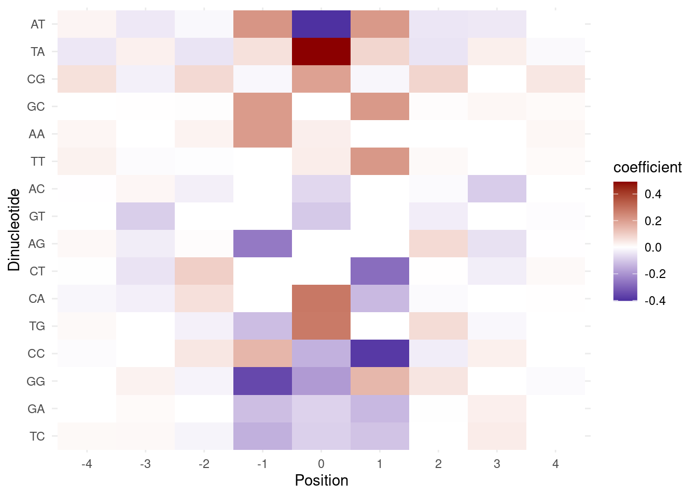
3.3 plot logo
3.3.1 Figure 4E
ab_score_quant <- gquantiles("DNMT.ab_score_glm_plus", c(0.1,0.9))
high_score_df <- gscreen("DNMT.ab_score_glm_plus >= ab_score_quant[2]", intervals=gintervals.all()) %>% mutate(start = start - 5, end = end + 6) %>% mutate(s = toupper(gseq.extract(.))) %>% as_tibble()
low_score_df <- gscreen("DNMT.ab_score_glm_plus <= ab_score_quant[1]", intervals=gintervals.all()) %>% mutate(start = start - 5, end = end + 6) %>% mutate(s = toupper(gseq.extract(.))) %>% as_tibble() high_score_df1 <- high_score_df %>%
mutate(
r1 = sample(c("A", "C", "G", "T"), size=length(s), replace=TRUE),
r2 = sample(c("A", "C", "G", "T"), size=length(s), replace=TRUE)) %>%
unite("r", r1, r2, sep="") %>%
mutate(i = 1:n(), r = ifelse(i <= length(s) * 0.8, "CG", r)) %>%
mutate(s1 = paste0(substr(s, 1, 5), r, substr(s, 8, length(s)))) %>%
select(chrom, start, end, s = s1)low_score_df1 <- low_score_df %>%
mutate(
r1 = sample(c("A", "C", "G", "T"), size=length(s), replace=TRUE),
r2 = sample(c("A", "C", "G", "T"), size=length(s), replace=TRUE)) %>%
unite("r", r1, r2, sep="") %>%
mutate(i = 1:n(), r = ifelse(i <= length(s) * 0.8, "CG", r)) %>%
mutate(s1 = paste0(substr(s, 1, 5), r, substr(s, 8, length(s)))) %>%
select(chrom, start, end, s = s1)options(repr.plot.width = 8, repr.plot.height = 4)
p_high <- ggplot() + ggseqlogo::geom_logo(high_score_df1$s, method="bits", seq_type="dna") + ggseqlogo::theme_logo()## Warning: `guides(<scale> = FALSE)` is deprecated. Please use `guides(<scale> =
## "none")` instead.## Scale for 'x' is already present. Adding another scale for 'x', which will
## replace the existing scale.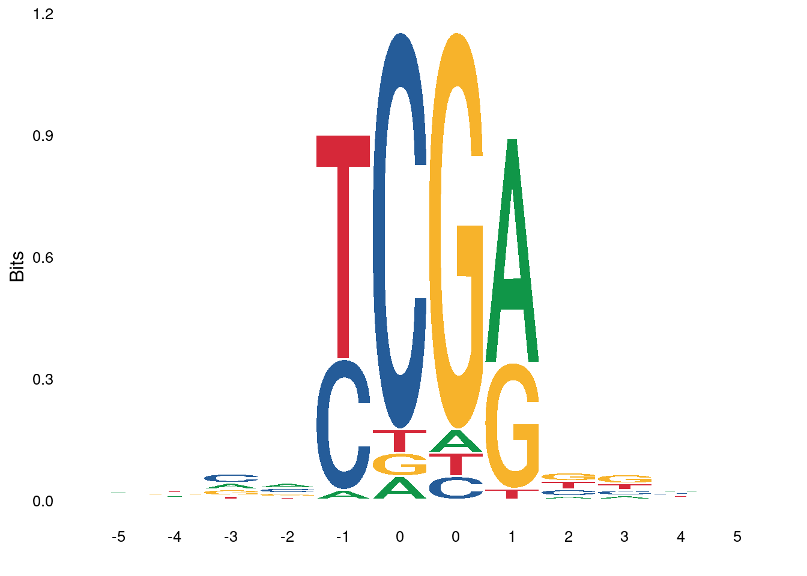
options(repr.plot.width = 8, repr.plot.height = 4)
p_low <- ggplot() + ggseqlogo::geom_logo(low_score_df1$s, method="bits", seq_type="dna") + ggseqlogo::theme_logo()## Warning: `guides(<scale> = FALSE)` is deprecated. Please use `guides(<scale> =
## "none")` instead.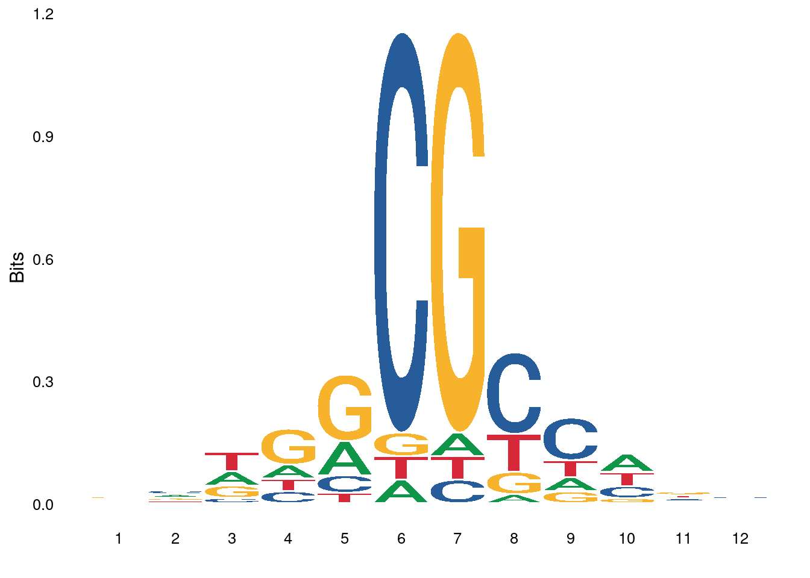
## Scale for 'x' is already present. Adding another scale for 'x', which will
## replace the existing scale.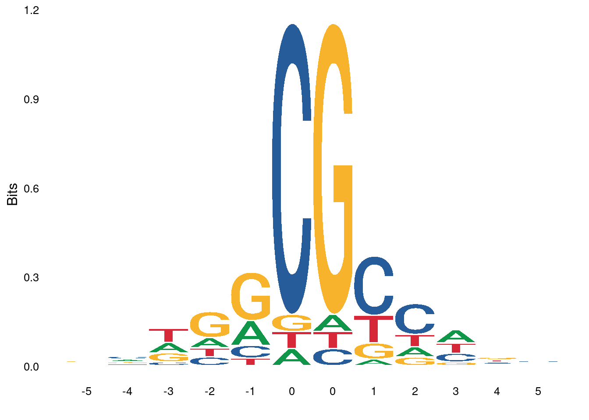
3.4 Test models with closest CpG methylation
Add CG content and GC content
gvtrack.create("tor", "Encode.esd3.replichip.rep2", "avg")
gvtrack.iterator("tor", sshift=-15000, eshift=15000)
m_annot <- gextract.left_join(c("seq.CG_500_mean", "seq.GC_500_mean", "tor"), intervals=m, iterator=m, colnames=c("cg_cont", "gc_cont", "tor")) %>% select(chrom, start, end, cg_cont, gc_cont, tor)Add closest CpG methylation
m_close_cg <- m %>% gintervals.neighbors1(m %>% select(chrom, start, end, dAB_close = dAB), maxneighbors=2) %>% filter(!(start == start1 & end == end1 & chrom == chrom1)) %>% mutate(dAB_close = ifelse(abs(dist) <= 1e3, dAB_close, NA)) %>% select(chrom, start, end, dAB_close)## Joining, by = c("chrom", "start", "end")3.4.1 Compute model with CG and GC content
## Joining, by = c("chrom", "start", "end")model_ab_gc_cg <- gen_seq_model(bind_cols(seq_df_wide, m_annot %>% select(cg_cont, gc_cont)), m, dAB) %cache_rds% here("output/ab_dinuc_model_5bp_cg_gc.rds")
model_ab_gc_cg_xgb <- gen_seq_model_xgboost(bind_cols(seq_df_wide, m_annot %>% select(cg_cont, gc_cont)), m, dAB, xgb_params) %cache_rds% here("output/ab_dinuc_model_5bp_cg_gc_xgboost.rds")bandwidth <- 0.08
point_size <- 0.001
p_gc_cg <- plot_model_scatter(model_ab_gc_cg_xgb, x_lab="Dinucleotide model +\nCG content + GC content", y_lab = "Meth (3a-/-) - (3b-/-)")
options(repr.plot.width = 5, repr.plot.height=5)
p_gc_cg & theme_bw() & theme(plot.subtitle = ggtext::element_markdown(),, aspect.ratio=1, panel.grid.major=element_blank(), panel.grid.minor=element_blank())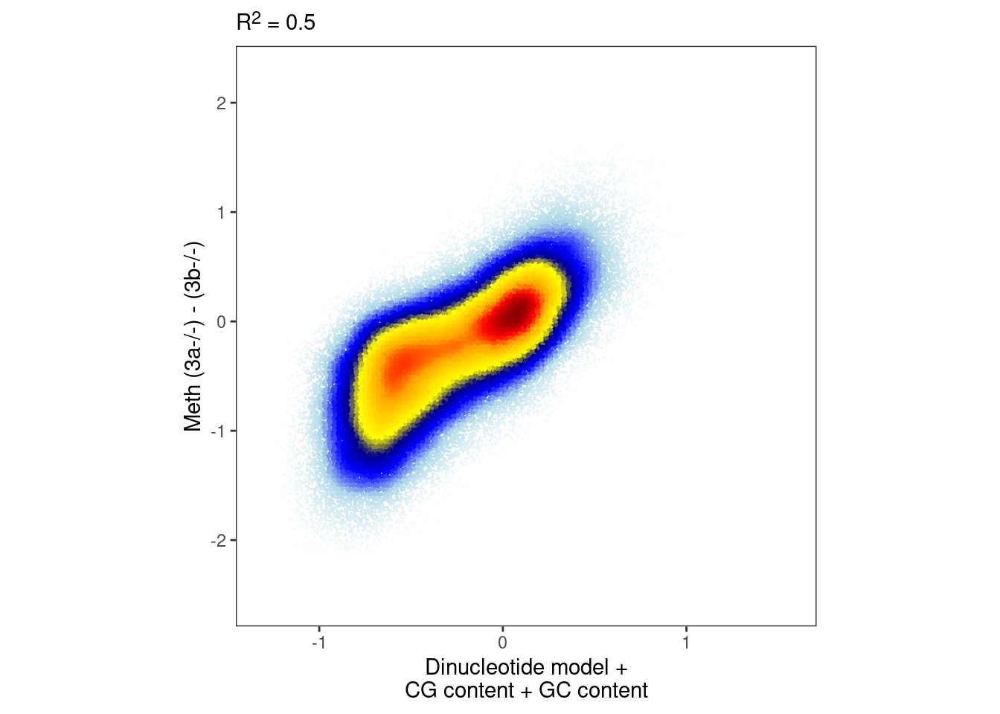
3.4.2 Compute model with TOR
model_ab_tor_xgb <- gen_seq_model_xgboost(bind_cols(seq_df_wide, m_annot %>% select(tor)), m, dAB, xgb_params) %cache_rds% here("output/ab_dinuc_model_5bp_tor_xgboost.rds")bandwidth <- 0.08
point_size <- 0.001
p_tor <- plot_model_scatter(model_ab_tor_xgb, x_lab="Dinucleotide model +\nTOR", y_lab = "Meth (3a-/-) - (3b-/-)")
options(repr.plot.width = 5, repr.plot.height=5)
p_tor & theme_bw() & theme(plot.subtitle = ggtext::element_markdown(),, aspect.ratio=1, panel.grid.major=element_blank(), panel.grid.minor=element_blank())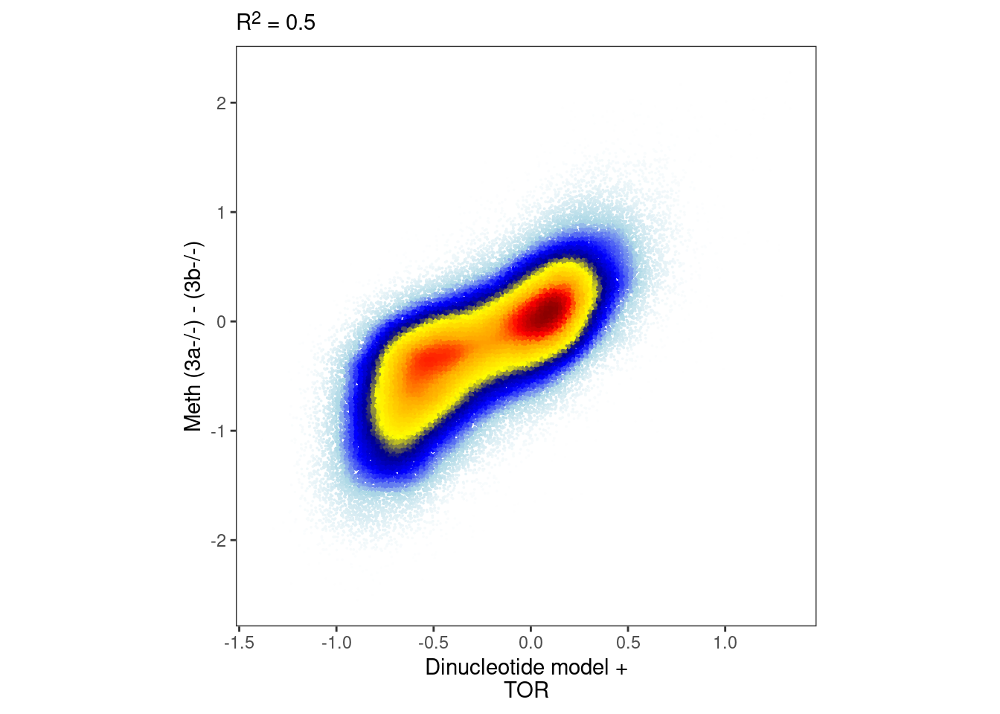
3.4.3 Compute model with closest CpG
intervs_f <- m_annot %>% filter(!is.na(dAB_close)) %>% select(chrom, start, end, dAB_close)
m_f <- m %>% inner_join(intervs_f %>% select(chrom:end))## Joining, by = c("chrom", "start", "end")## Joining, by = c("chrom", "start", "end")model_ab_close_cg <- gen_seq_model(seq_df_wide_f, m_f, dAB) %cache_rds% here("output/ab_dinuc_model_5bp_close_cg.rds")
nrow(intervs_f)## [1] 80056model_ab_close_cg_xgb <- gen_seq_model_xgboost(seq_df_wide_f, m_f, dAB, xgb_params) %cache_rds% here("output/ab_dinuc_model_5bp_close_cg_xgb.rds")
nrow(intervs_f)## [1] 80056p_close_cg <- plot_model_scatter(model_ab_close_cg_xgb, x_lab="Dinucleotide model +\nclosest CpG methylation", y_lab = "Meth (3a-/-) - (3b-/-)")
options(repr.plot.width = 5, repr.plot.height=5)
p_close_cg & theme_bw() & theme(plot.subtitle = ggtext::element_markdown(),, aspect.ratio=1, panel.grid.major=element_blank(), panel.grid.minor=element_blank())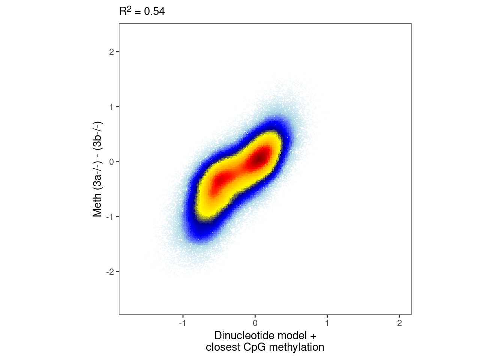
3.4.4 Compute model with all enhancer methylation
## Min. 1st Qu. Median Mean 3rd Qu. Max.
## 20.0 60.0 100.0 200.2 200.0 9320.0m_enh_punc <- cpg_meth_meth_cov %>%
gintervals.neighbors1(enh_intervs) %>%
filter(dist == 0) %>%
group_by(chrom1, start1, end1) %>%
mutate(mA_enh.meth = sum(d1_3a.meth, d2_3a.meth, d3_3a.meth, d4_3a.meth, na.rm=FALSE),
mA_enh.cov = sum(d1_3a.cov, d2_3a.cov, d3_3a.cov, d4_3a.cov, na.rm=FALSE),
mB_enh.meth = sum(d1_3b.meth, d2_3b.meth, d3_3b.meth, d4_3b.meth, na.rm=FALSE),
mB_enh.cov = sum(d1_3b.cov, d2_3b.cov, d3_3b.cov, d4_3b.cov, na.rm=FALSE),
mA.meth = psum(d1_3a.meth, d2_3a.meth, d3_3a.meth, d4_3a.meth, na.rm=FALSE),
mA.cov = psum(d1_3a.cov, d2_3a.cov, d3_3a.cov, d4_3a.cov, na.rm=FALSE),
mB.meth = psum(d1_3b.meth, d2_3b.meth, d3_3b.meth, d4_3b.meth, na.rm=FALSE),
mB.cov = psum(d1_3b.cov, d2_3b.cov, d3_3b.cov, d4_3b.cov, na.rm=FALSE),
mA_enh = (mA_enh.meth - mA.meth) / (mA_enh.cov - mA.cov),
mB_enh = (mB_enh.meth - mB.meth) / (mB_enh.cov - mB.cov),
dAB_enh = mA_enh - mB_enh
) %>%
ungroup() %>%
select(chrom, start, end, dAB_enh)intervs_f <- m_annot %>% inner_join(m_enh_punc) %>% filter(!is.na(dAB_enh)) %>% select(chrom, start, end, dAB_enh)## Joining, by = c("chrom", "start", "end")## Joining, by = c("chrom", "start", "end")## Joining, by = c("chrom", "start", "end")model_ab_enh <- gen_seq_model(seq_df_wide_f, m_f, dAB) %cache_rds% here("output/ab_dinuc_model_5bp_enh_meth.rds")
model_ab_enh_xgb <- gen_seq_model_xgboost(seq_df_wide_f, m_f, dAB, xgb_params) %cache_rds% here("output/ab_dinuc_model_5bp_enh_meth_xgb.rds")
nrow(intervs_f)## [1] 408133.4.5 Figure 7A
p_enh_meth <- plot_model_scatter(model_ab_enh_xgb, x_lab="Dinucleotide model +\nEnhancer methylation", y_lab = "Meth (3a-/-) - (3b-/-)")
options(repr.plot.width = 5, repr.plot.height=5)
p_enh_meth & theme_bw() & theme(plot.subtitle = ggtext::element_markdown(), aspect.ratio=1, panel.grid.major=element_blank(), panel.grid.minor=element_blank())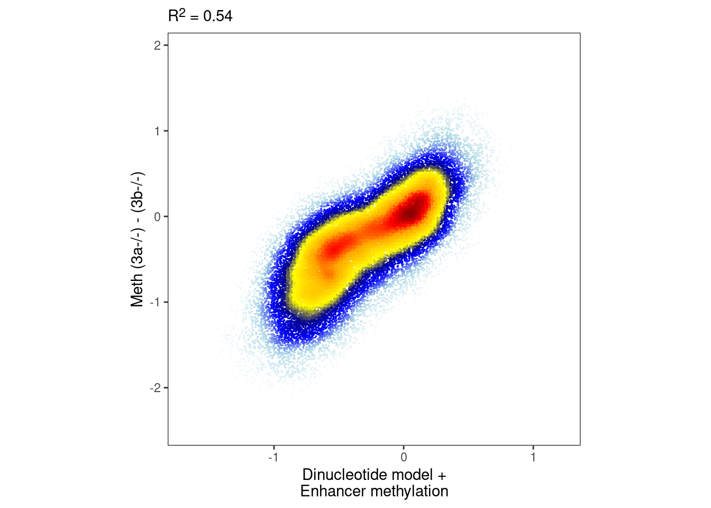
3.4.5.1 All variables
intervs_f <- m_annot %>% inner_join(m_enh_punc) %>% filter(!is.na(dAB_enh)) %>% select(chrom, start, end, dAB_enh)## Joining, by = c("chrom", "start", "end")## Joining, by = c("chrom", "start", "end")## Joining, by = c("chrom", "start", "end")seq_df_wide_f <- seq_df_wide_f %>% left_join(m_annot %>% select(chrom:end, cg_cont, gc_cont, tor, dAB_close))## Joining, by = c("chrom", "start", "end")model_ab_all_vars_xgb <- gen_seq_model_xgboost(seq_df_wide_f, m_f, dAB, xgb_params) %cache_rds% here("output/ab_dinuc_model_5bp_all_vars_xgb.rds")
nrow(intervs_f)## [1] 40813p_all_vars <- plot_model_scatter(model_ab_all_vars_xgb, x_lab="Dinucleotide model +\nCG+GC+TOR+Closest CpG+Enhancer", y_lab = "Meth (3a-/-) - (3b-/-)")
options(repr.plot.width = 5, repr.plot.height=5)
p_all_vars & theme_bw() & theme(plot.subtitle = ggtext::element_markdown(), aspect.ratio=1, panel.grid.major=element_blank(), panel.grid.minor=element_blank())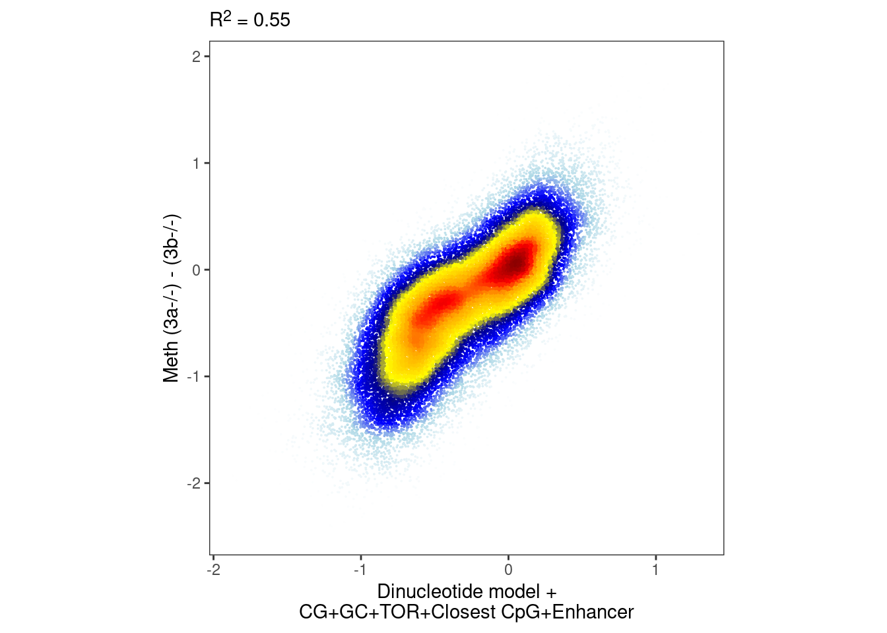
3.5 Estimate prediction noise
cpg_meth1 <- calc_eb_day0_to_day4_cpg_meth(min_cov = 10, max_na = 5, rm_meth_cov=FALSE)
cpg_meth1 <- cpg_meth1 %>% inner_join(m %>% select(chrom, start, end))## Joining, by = c("chrom", "start", "end")cpg_meth.avg <- cpg_meth1 %>% select(-ends_with("meth"), -ends_with("cov")) %>% intervs_to_mat()
cpg_meth.cov <- cpg_meth1 %>% select(chrom:end, ends_with("cov")) %>% intervs_to_mat()
cpg_meth.cov <- cpg_meth.cov[, paste0(colnames(cpg_meth.avg), ".cov")]
cpg_meth.samp_meth <- cpg_meth.avg
for (col in colnames(cpg_meth.avg)){
suppressWarnings(cpg_meth.samp_meth[, col] <- map2_int(cpg_meth.cov[, paste0(col, ".cov")], cpg_meth.avg[, col], ~ sum(rbinom(n=.x, size=1, prob=.y) )))
}
cpg_meth.samp <- cpg_meth.samp_meth / cpg_meth.covm_samp <- cpg_meth.samp %>% mat_to_intervs() %>%
mutate(
mA = psum(d1_3a, d2_3a, d3_3a, d4_3a, na.rm=FALSE),
mB = psum(d1_3b, d2_3b, d3_3b, d4_3b, na.rm=FALSE),
mwt = psum(d1_wt, d2_wt, d3_wt, d4_wt, na.rm=FALSE),
dAB = mA - mB,
dB = mB - mwt,
dA = mA - mwt
) %>%
select(chrom, start, end, mA, mB, mwt, dAB, dB, dA) %>%
as_tibble()## dAB (dinuc)model_ab_samp <- gen_seq_model(seq_df_wide, m_samp, dAB) %cache_rds% here("output/ab_dinuc_model_5bp_samp.rds")
model_ab_samp_xgb <- gen_seq_model_xgboost(seq_df_wide, m_samp, dAB, xgb_params) %cache_rds% here("output/ab_dinuc_model_5bp_samp_xgboost.rds")bandwidth <- 0.08
point_size <- 0.001
p_ab_samp <- plot_model_scatter(model_ab_samp_xgb, x_lab="Dinucleotide combined model (sampled)", y_lab = "Meth (3a-/-) - (3b-/-)")
p_ab_samp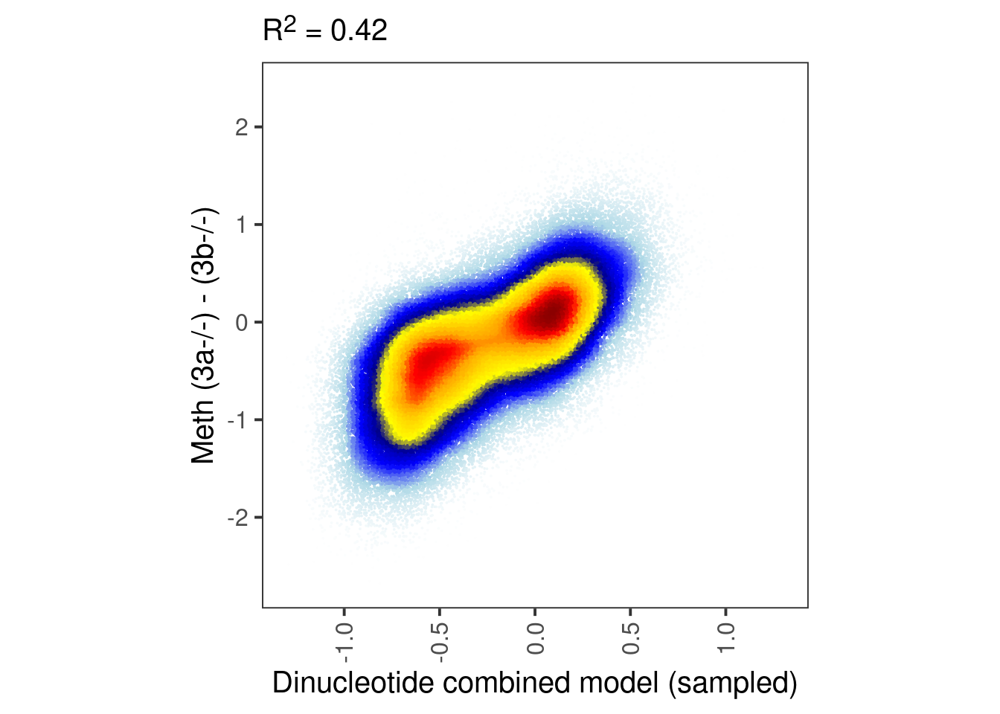
bandwidth <- 0.08
point_size <- 0.001
p_ab_samp_obs <- tibble(pred = model_ab_xgboost$pred, y = model_ab_samp_xgb$pred) %>%
mutate(col = densCols(., bandwidth=0.06,colramp=colorRampPalette(c("white","lightblue", "blue", "darkblue", "yellow", "gold","orange","red", "darkred" )))) %>%
ggplot(aes(x=pred, y=y, col=col)) +
geom_point(shape=19, size=0.001) +
scale_color_identity() +
xlab("Dinucleotide combined model (observed)") +
ylab("Dinucleotide combined model (sampled)") +
theme(aspect.ratio=1, panel.grid.major=element_blank(), panel.grid.minor=element_blank()) +
labs(subtitle = glue("R^2 = {cor}", cor = round(cor(model_ab_xgboost$pred, model_ab_samp_xgb$pred)^2, digits=5))) +
theme(plot.subtitle = ggtext::element_markdown())
p_ab_samp_obs
## [1] 0.98552bandwidth <- 0.08
point_size <- 0.001
p_ab_samp_obs_y <- tibble(pred = model_ab_xgboost$y, y = model_ab_samp_xgb$y) %>%
mutate(col = densCols(., bandwidth=0.06,colramp=colorRampPalette(c("white","lightblue", "blue", "darkblue", "yellow", "gold","orange","red", "darkred" )))) %>%
ggplot(aes(x=pred, y=y, col=col)) +
geom_point(shape=19, size=0.001) +
scale_color_identity() +
xlab("Meth (3a-/-) - (3b-/-) (observed)") +
ylab("Meth (3a-/-) - (3b-/-) (sampled)") +
theme(aspect.ratio=1, panel.grid.major=element_blank(), panel.grid.minor=element_blank()) +
labs(subtitle = glue("R^2 = {cor}", cor = round(cor(model_ab_xgboost$y, model_ab_samp_xgb$y)^2, digits=2))) +
theme(plot.subtitle = ggtext::element_markdown())
p_ab_samp_obs_y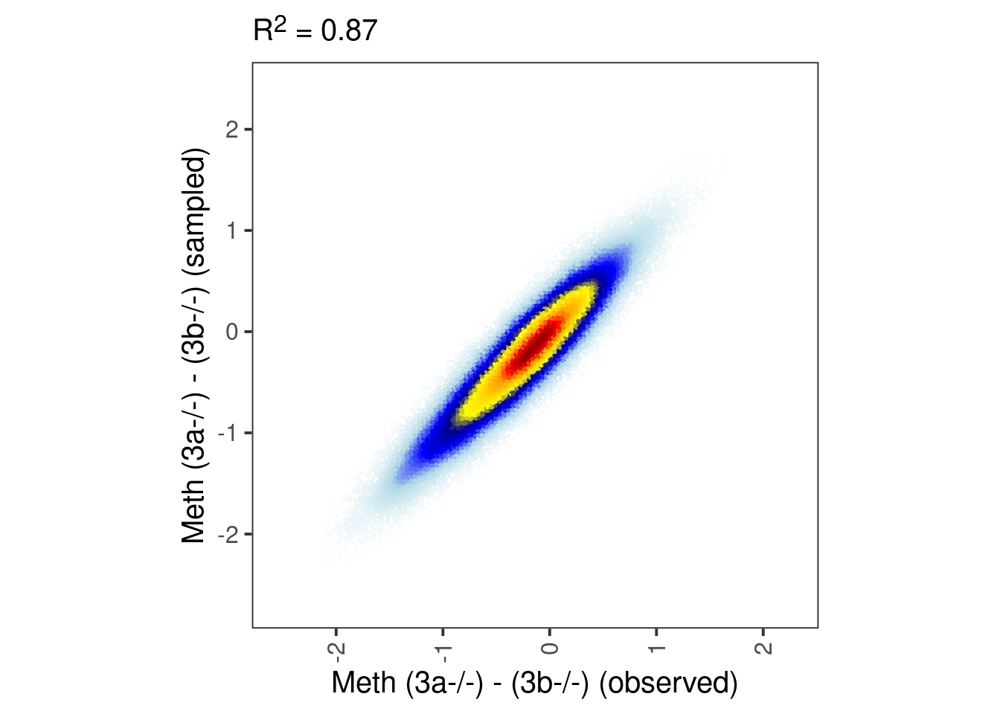
3.5.1 Kinteics per time and score bin
track_df <- tracks_key %>% filter(day %in% c("d0S", paste0("d", 0:6))) %>% group_by(day, line) %>% mutate(name1 = glue("{day}_{line}_{sort}_{1:n()}")) %>% ungroup() %>% select(line, day, sort, name = name1, track_name) %>% unite("grp", day, line, sort, remove=FALSE)
cpg_meth_all <- gextract_meth(
tracks = track_df$track_name,
names=track_df$name,
intervals=gintervals.union("intervs.captPBAT_probes.ES_EB_V1", "intervs.captPBAT_probes.ES_EB_V2"),
extract_meth_calls = TRUE) %cache_df% here("output/eb_day0_to_day6_cpg_meth.tsv") %>% select(-intervalID) %>% as_tibble()
cpg_meth_all <- cpg_meth_all %>% select(-ends_with("ko1"))
colnames(cpg_meth_all) <- gsub("ko3a", "3a", colnames(cpg_meth_all))
colnames(cpg_meth_all) <- gsub("ko3b", "3b", colnames(cpg_meth_all))cpg_meth_days <- cpg_meth_all %>% select(chrom, start, end)
grps <- expand.grid(paste0("d", 0:6), c("wt", "3a", "3b")) %>% unite("var", c("Var1", "Var2")) %>% pull(var)
for (g in grps){
cov_cols <- grep(glue("{g}.*cov$"), colnames(cpg_meth_all), value=TRUE)
meth_cols <- grep(glue("{g}.*meth$"), colnames(cpg_meth_all), value=TRUE)
cpg_meth_days[[paste0(g, ".cov")]] <- rowSums(cpg_meth_all[, cov_cols], na.rm=TRUE)
cpg_meth_days[[paste0(g, ".meth")]] <- rowSums(cpg_meth_all[, meth_cols], na.rm=TRUE)
}cpg_intervs <- cpg_meth_all %>% select(chrom:end)
scores_df <- gextract("DNMT.ab_score_xgb_plus", iterator=cpg_intervs, intervals=cpg_intervs, colnames="ab_score") %>% arrange(intervalID) %>% select(-intervalID) %>% as_tibble()cov_mat <- cpg_meth_days %>% select(chrom:end, ends_with("cov")) %>% intervs_to_mat()
colnames(cov_mat) <- gsub(".cov$", "", colnames(cov_mat))
meth_mat <- cpg_meth_days %>% select(chrom:end, ends_with("meth")) %>% intervs_to_mat()
colnames(meth_mat) <- gsub(".meth$", "", colnames(meth_mat))score_qs <- quantile(scores_df$ab_score, (0:20)/20)
score_qs[length(score_qs)] <- score_qs[length(score_qs)]+1
score_qs[1] <- score_qs[1]-1
scores_df <- scores_df %>% mutate(score_grp = as.character(as.numeric(cut(ab_score, breaks=score_qs, include.lowest = TRUE))))cov_bin <- tgs_matrix_tapply(t(cov_mat), scores_df$score_grp, sum, na.rm=TRUE)
meth_bin <- tgs_matrix_tapply(t(meth_mat), scores_df$score_grp, sum, na.rm=TRUE)
stopifnot(all(colnames(cov_bin) == colnames(meth_bin)))
avg_bin <- meth_bin / cov_bin
avg_df <- avg_bin %>% as.data.frame() %>% rownames_to_column("bin") %>% gather("samp", "val", -bin) %>% separate(samp, c("day", "line")) %>% as_tibble()3.5.2 Figure 4G
options(repr.plot.width = 10, repr.plot.height=4)
cols <- colorRampPalette(c("gray", "darkred","yellow"))(20)
p <- avg_df %>%
mutate(day = gsub("d", "", day)) %>%
mutate(bin = factor(bin, levels=as.character(1:20))) %>%
mutate(line = factor(line, levels=c("wt", "3b", "3a"))) %>%
mutate(line = fct_recode(line, "3b-/-" = "3b", "3a-/-" = "3a")) %>%
ggplot(aes(x=day, y=val, color=bin, group=bin)) +
geom_point(size=0.5) +
geom_line(lwd = 0.5) +
scale_color_manual(values=cols) +
facet_grid(.~line) +
xlab("EB day") +
ylab("Meth.") +
guides(color=FALSE) +
theme_arial(7) ## Warning: `guides(<scale> = FALSE)` is deprecated. Please use `guides(<scale> =
## "none")` instead.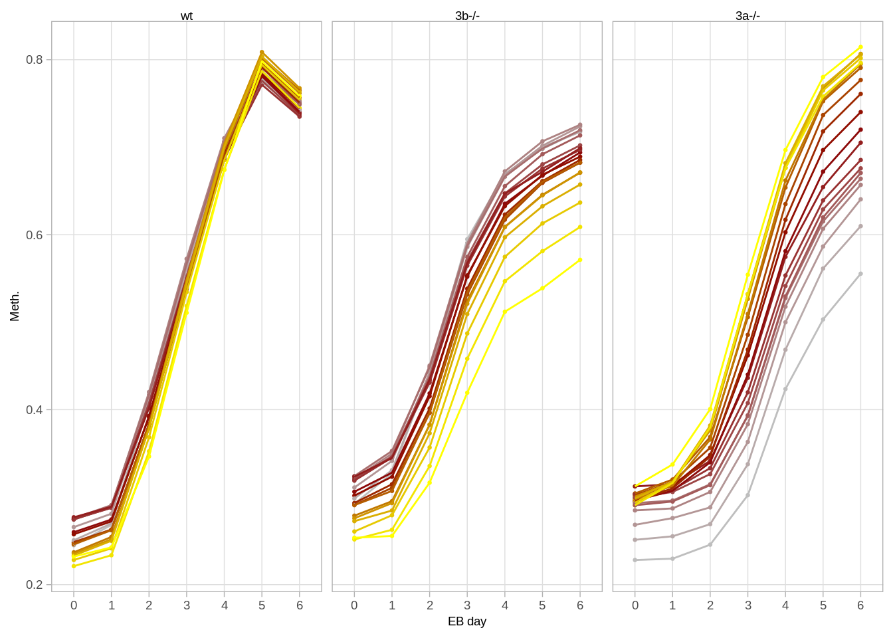
options(repr.plot.width=2, repr.plot.height=10)
color.bar <- function(lut, min, max=-min, nticks=11, ticks=seq(min, max, len=nticks), title='') {
scale = (length(lut)-1)/(max-min)
plot(c(0,10), c(min,max), type='n', bty='n', xaxt='n', xlab='', yaxt='n', ylab='', main=title)
for (i in 1:(length(lut)-1)) {
y = (i-1)/scale + min
rect(0,y,10,y+1/scale, col=lut[i], border=NA)
}
}
color.bar(cols, min=1, max=20, nticks=20)3.5.3 Scores within enhancers
enh_cpg_score <- gextract.left_join("DNMT.ab_score_xgb_plus", intervals = small_enh, iterator = "intervs.global.seq_CG", colnames="score") %>% as_tibble()3.5.3.1 Plot distribution of sequence scores inside enhancers
## [1] 1787409## [1] 323431## # A tibble: 5 x 2
## n_cpgs n
## 1 2 120330
## 2 3 110865
## 3 4 97400
## 4 5 85575
## 5 6 763323.5.4 Figure 7B
options(repr.plot.width = 7, repr.plot.height = 5)
p <- bind_rows(mean_enh_score %>% mutate(type = "Observed"), mean_enh_score_shuff %>% mutate(type = "Control")) %>% filter(n_cpgs %in% c(2:6)) %>% mutate(type = factor(type, levels = c("Observed", "Control"))) %>% ggplot(aes(x=factor(n_cpgs), y=mean_enh, fill=type)) + geom_boxplot( outlier.size = 0.005, lwd = 0.2) + scale_fill_manual(name="", values=c("Observed" = "darkred", "Control" = "darkgray")) + xlab("# of CpGs in enhancer") + ylab("Mean sequence score")
p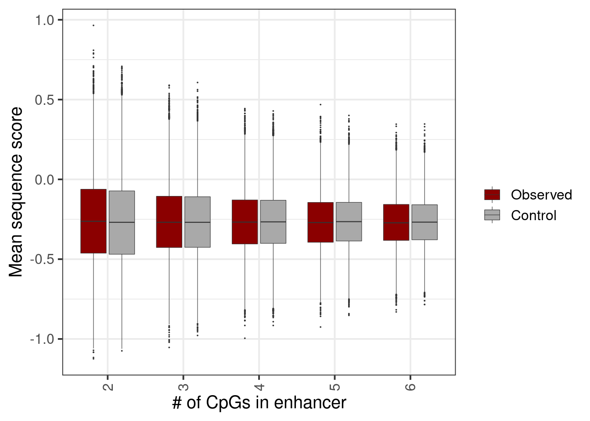
3.5.5 Extract proA/proB enhancers
We will extract enhancers with 2 or more CpGs which have a sequence score in the top 2% as proB, and the bottom 2% as proA:
norm_enh_intervs <- get_all_enhancers() %>% gintervals.normalize(200)
norm_enh_cpg_score <- gextract.left_join("DNMT.ab_score_xgb_plus", intervals = norm_enh_intervs, iterator = "intervs.global.seq_CG", colnames="score") %>% as_tibble()score_quants <- gquantiles("DNMT.ab_score_xgb_plus", c(0.07, 0.93), iterator = 200)
quant_A <- score_quants[1]
quant_B <- score_quants[2]biased_enh <- norm_enh_cpg_score %>%
data.table::as.data.table() %>%
group_by(chrom1, start1, end1) %>%
filter(n() >= 3) %>%
summarise(n_cpgs = n(), type = case_when(all(score <= quant_A) ~ "proA", all(score >= quant_B) ~ "proB"), .groups = "drop") %>%
filter(!is.na(type)) %>%
as_tibble()biased_enh1 <- biased_enh %>%
rename(chrom = chrom1, start = start1, end = end1) %>%
gintervals.neighbors1("intervs.global.tss") %>%
select(chrom:type, closest_gene = geneSymbol, gene_distance = dist) %>%
filter(gene_distance < -500 | gene_distance > 50) # remove promoterswritexl::write_xlsx(
list(proA = biased_enh1 %>% filter(type == "proA") %>% select(chrom:end, n_cpgs, closest_gene, gene_distance) %>% arrange(abs(gene_distance)),
proB = biased_enh1 %>% filter(type == "proB") %>% select(chrom:end, n_cpgs, closest_gene, gene_distance) %>% arrange(abs(gene_distance))),
here("output/Biased-Enhancers.xlsx"))3.5.6 No difference in methylation of full enhancers vs shuffled
enh_cpg_score1 <- enh_cpg_score %>% mutate(center = start1 + (end1 - start1) / 2, d_center = abs(start - center)) %>% group_by(chrom1, start1, end1) %>% filter(n() >= 5) %>% arrange(chrom1, start1, end1, d_center) %>% dplyr::slice(1:5) %>% ungroup()set.seed(17)
obs_df <- enh_cpg_score1 %>% group_by(chrom1, start1, end1) %>% summarise(mean_score = mean(score, na.rm=TRUE), .groups="drop") %>% mutate(type = "obs")
shuff_df <- enh_cpg_score1 %>% mutate(score = sample(score)) %>% group_by(chrom1, start1, end1) %>% summarise(mean_score = mean(score, na.rm=TRUE), .groups="drop") %>% mutate(type = "shuff")options(repr.plot.width = 7, repr.plot.height = 7)
bind_rows(shuff_df, obs_df) %>% ggplot(aes(x=mean_score, color=type)) + stat_ecdf()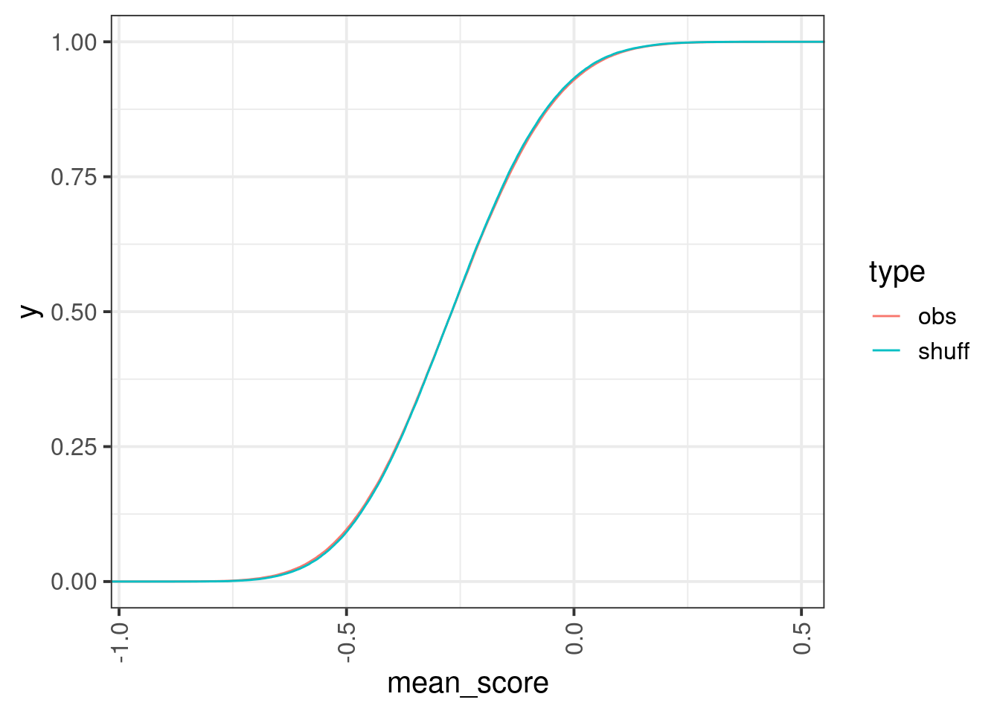
## Warning in ks.test(shuff_df$mean_score, obs_df$mean_score): p-value will be
## approximate in the presence of ties##
## Two-sample Kolmogorov-Smirnov test
##
## data: shuff_df$mean_score and obs_df$mean_score
## D = 0.0058028, p-value = 0.06908
## alternative hypothesis: two-sided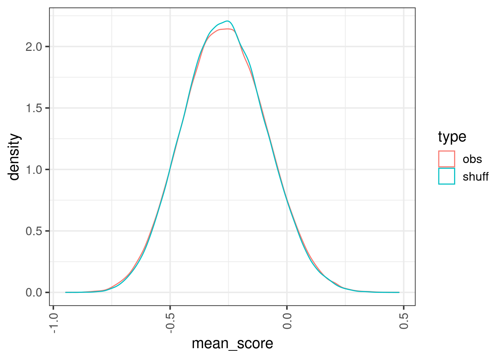
map_dfr(c(-0.5, -0.3, -0.2), function(thresh) tibble(thresh = thresh, fdr = (obs_df %>% filter(mean_score <= thresh) %>% nrow()) / (shuff_df %>% filter(mean_score <= thresh) %>% nrow())))## # A tibble: 3 x 2
## thresh fdr
## 1 -0.5 1.0502502
## 2 -0.3 1.0016682
## 3 -0.2 0.99608093.5.7 Toatal enh methylation prediction
enh_intervs <- get_all_enhancers()
small_enh <- enh_intervs %>% mutate(l = end - start) %>% filter(l <= 1e4)
full_enh_meth <- calc_eb_day0_to_day4_cpg_meth(min_cov = 10, max_na = 5, intervals=small_enh, iterator = small_enh, cache_fn = here("output/eb_day0_to_day4_full_enh_meth.tsv"))m_full <- full_enh_meth %>%
mutate(
mA = psum(d1_3a, d2_3a, d3_3a, d4_3a, na.rm=FALSE),
mB = psum(d1_3b, d2_3b, d3_3b, d4_3b, na.rm=FALSE),
mwt = psum(d1_wt, d2_wt, d3_wt, d4_wt, na.rm=FALSE),
dAB = mA - mB,
dB = mB - mwt,
dA = mA - mwt
) %>%
select(chrom, start, end, mA, mB, mwt, dAB, dB, dA)locus_means <- rowMeans(full_enh_meth %>% select(-(chrom:end)), na.rm=TRUE)
locus_sds <- matrixStats::rowSds(full_enh_meth %>% select(-(chrom:end)) %>% as.matrix(), na.rm=TRUE)options(repr.plot.width = 8, repr.plot.height = 4)
thresh <- 0.05
p1 <- tibble(m = locus_means) %>% ggplot(aes(x=m)) + geom_density() + geom_vline(xintercept=thresh, linetype="dashed", color="red")
p2 <- tibble(m = locus_means, sd = locus_sds) %>% ggplot(aes(x=m, y=sd)) + geom_point(size=0.01) + geom_vline(xintercept=thresh, linetype="dashed", color="red")
p1 + p2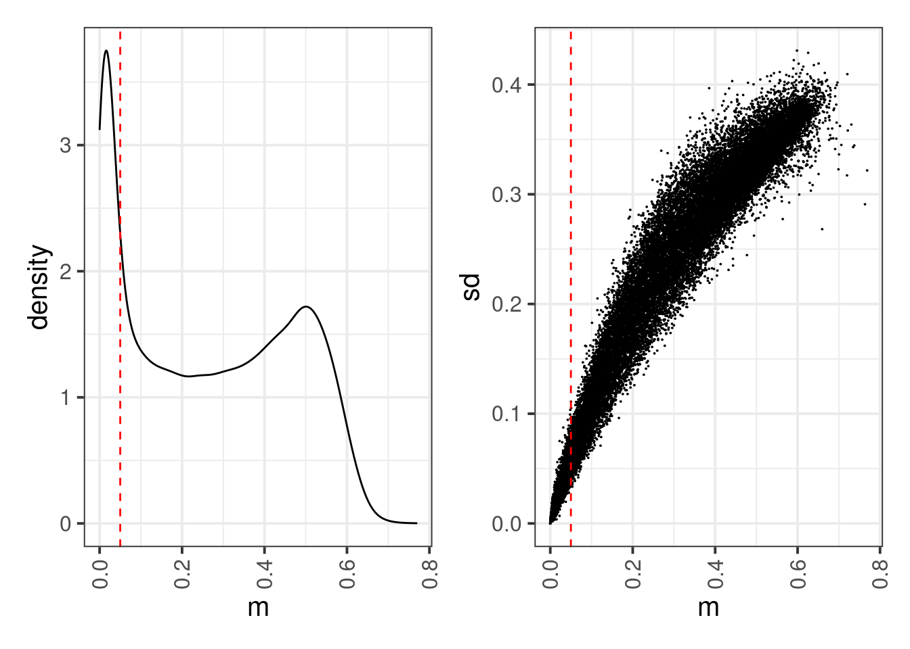
## [1] 7901## [1] 116117m_full_dAB <- m_full %>% filter(!is.na(dAB)) %>% select(chrom, start, end, dAB)
m_full_cpg_scores <- gextract.left_join("DNMT.ab_score_xgb_plus", intervals = m_full_dAB, iterator = "intervs.global.seq_CG", colnames="score") %>% as_tibble()m_full_pred <- m_full_cpg_scores %>% group_by(chrom1, start1, end1) %>% filter(n() >= 2) %>% summarise(score = mean(score), dAB = dAB[1], .groups="drop") %>% rename(chrom = chrom1, start = start1, end = end1, pred = score, y = dAB) %>% filter(!is.na(pred), !is.na(y))bandwidth <- 0.08
point_size <- 0.001
p_full_enh_meth <- tibble(pred = m_full_pred$pred, y = m_full_pred$y) %>%
mutate(col = densCols(., bandwidth=bandwidth,colramp=colorRampPalette(c("white","lightblue", "blue", "darkblue", "yellow", "gold","orange","red", "darkred" )))) %>%
ggplot(aes(x=pred, y=y, col=col)) +
geom_point(shape=19, size=point_size) +
scale_color_identity() +
coord_cartesian(xlim = c(-0.6, 0.1), ylim = c(-1, 0.6)) +
xlab("Prediction") +
ylab("Full enhancer meth. (3a-/-) - (3b-/-)") +
theme(aspect.ratio=1, panel.grid.major=element_blank(), panel.grid.minor=element_blank()) +
labs(subtitle = glue("R^2 = {cor}", cor = round(cor(m_full_pred$pred, m_full_pred$y)^2, digits=2)))
options(repr.plot.width = 5, repr.plot.height=5)
p_full_enh_meth & theme_bw() & theme(plot.subtitle = ggtext::element_markdown(), aspect.ratio=1, panel.grid.major=element_blank(), panel.grid.minor=element_blank())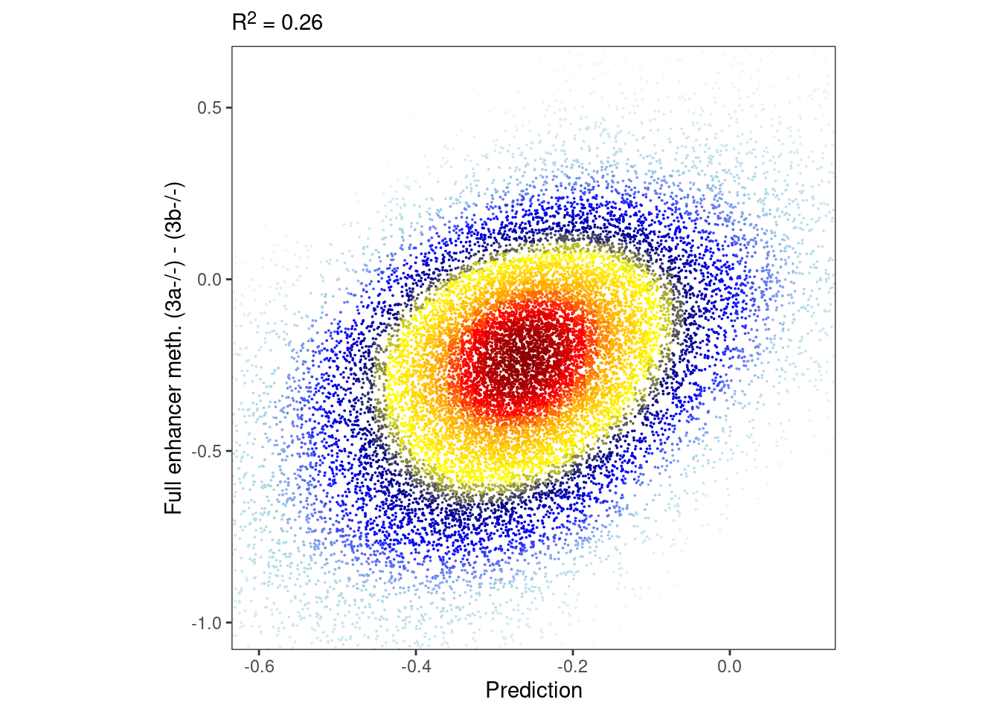
m_full_pred_cg_num <- m_full_cpg_scores %>% group_by(chrom1, start1, end1) %>% mutate(n_cpgs = n()) %>% group_by(chrom1, start1, end1, n_cpgs) %>% summarise(score = mean(score), dAB = dAB[1], .groups="drop") %>% rename(chrom = chrom1, start = start1, end = end1, pred = score, y = dAB) %>% filter(!is.na(pred), !is.na(y)) %>% group_by(n_cpgs) %>% summarise(rsq = cor(pred, y)^2)3.5.8 Figure 7C
p <- m_full_pred_cg_num %>% filter(n_cpgs >= 1, n_cpgs <= 5) %>% ggplot(aes(x=factor(n_cpgs), y=rsq)) + geom_col() + xlab("# of CpGs in enhancer") + ylab(expression (R^2))
p
df_full <- full_enh_meth %>% select(chrom, start, end)
for (d in 0:4){
df_full[[paste0("d", d)]] <- full_enh_meth[[glue("d{d}_3a")]] - full_enh_meth[[glue("d{d}_3b")]]
}
df_full <- df_full %>% gather("day", "diff", -(chrom:end)) %>% mutate(day = gsub("d", "Day ", day))options(repr.plot.width=5, repr.plot.height=12)
p <- df_full %>%
ggplot(aes(x=diff, fill=stat(abs(x)), y=1)) +
ggridges::geom_density_ridges_gradient(lwd = 0.5) +
scale_fill_stepsn(colors=c("darkgray", "darkred"), breaks = c(0, 0.2, 1)) +
guides(fill="none") +
ylab("Density") +
xlab("Meth (3a-/-) - (3b-/-)") +
coord_cartesian(xlim = c(-0.5, 0.5)) +
facet_grid(day~., scales="free_y") +
theme_arial(7) +
theme(aspect.ratio=0.6) +
vertical_labs()
p## Picking joint bandwidth of 0.00776## Picking joint bandwidth of 0.00824## Picking joint bandwidth of 0.0118## Picking joint bandwidth of 0.0148## Picking joint bandwidth of 0.00856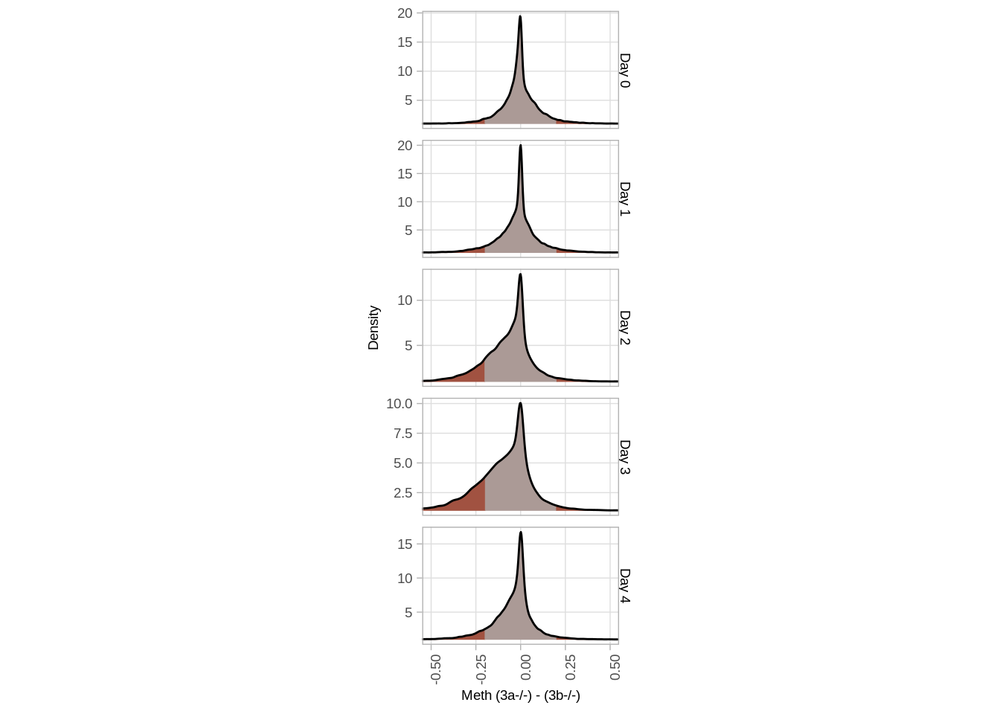